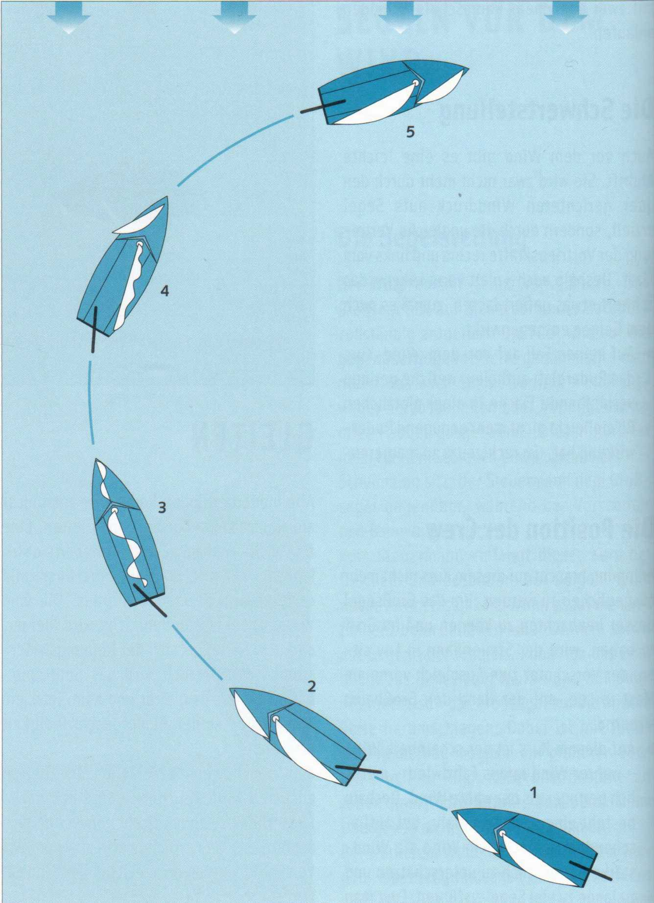
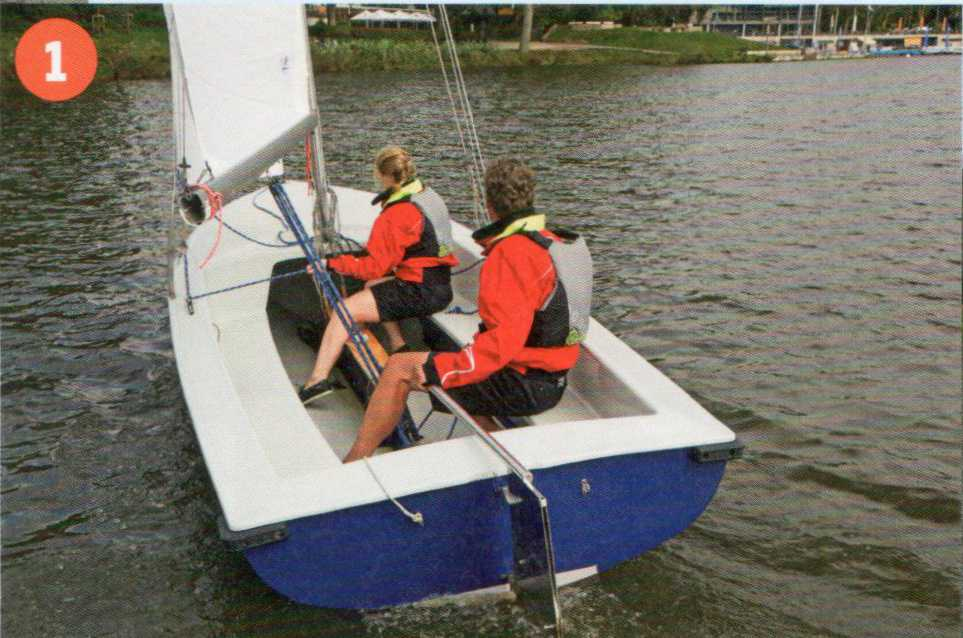
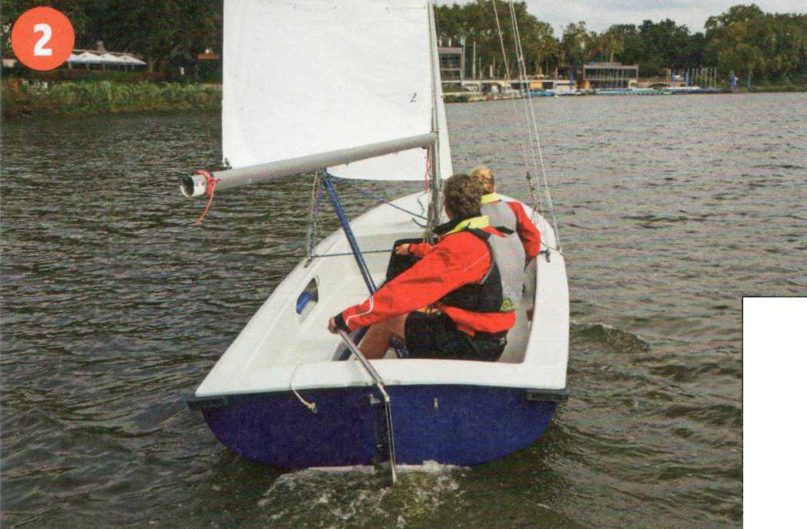
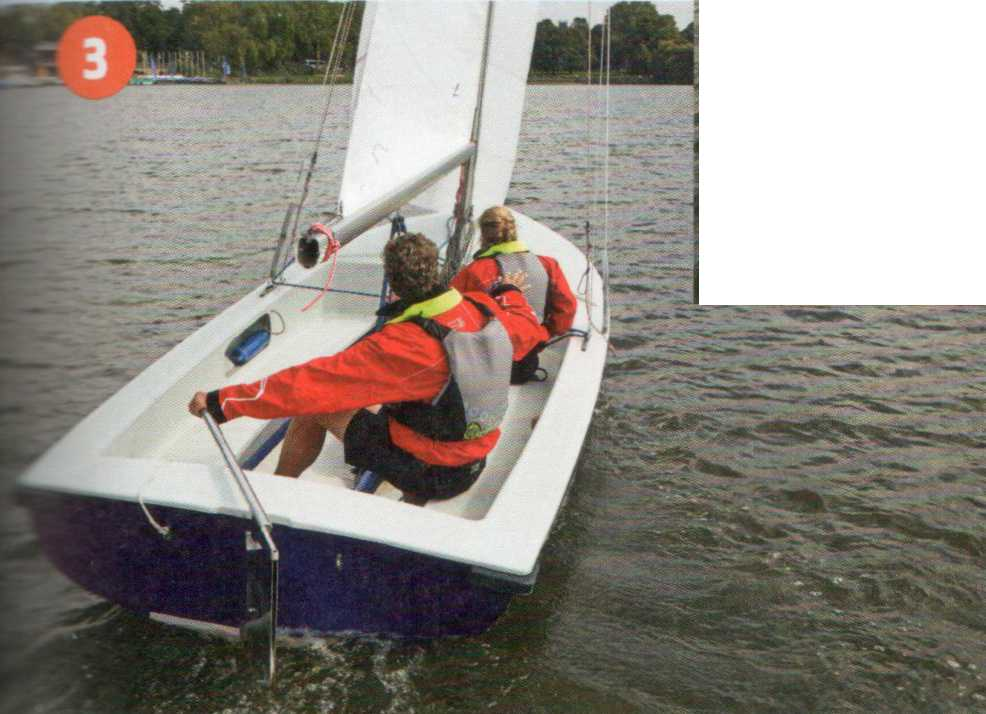
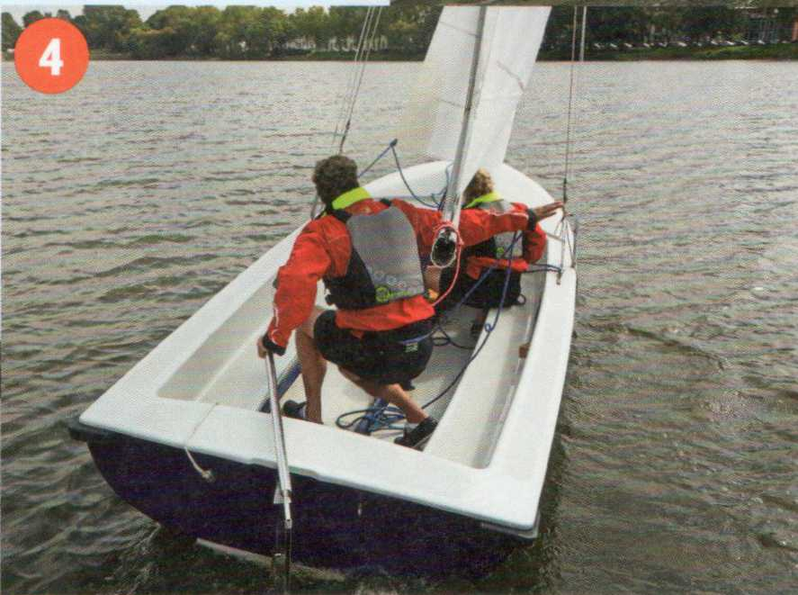
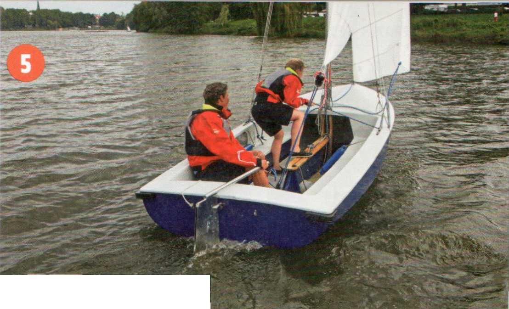

Wenden heißt, mit dem Bug durch den Wind gehen, oft auch als über Stag gehen bezeichnet. Wichtig ist, dass das Boot dabei genügend Fahrt behält und nicht mit dem Bug im Wind stehen bleibt, rückwärts treibt oder auf den alten Bug zurückfällt. Deshalb das Ruder nicht ruckartig und hart einschlagen, sondern langsam und weich. Sonst liegt das Ruderblatt schon quer, bevor das Boot überhaupt andrehen konnte, und stoppt gleich zu Anfang die Fahrt erheblich. Die Ruderlage muss sich dem Drehmoment des Bootes anpassen und darf ihm nicht vorauseilen. Ist das Boot auf die neue Lee-Seite abgefallen, sanft Gegenruder legen, um das Drehmoment aufzuheben. Geht ein Boot schwer durch den Wind - wie beispielsweise leichte Katamarane -, lässt man die Vorschot belegt und die Fock backkommen. Sie wird erst auf das Kommando »Über die Segel!« losgeworfen.
Wird die neue Lee-Fockschot zu früh dichtgeholt, kann sich die Fock backstellen und das Boot auf den alten Bug zurückfallen lassen. Hat sie jedoch erst voll Wind gefangen, ist sie, ohne Winsch, selbst auf kleineren Booten kaum noch dicht zu bekommen.
|
Kommandotafel Wenden |
|
Klar zum Wenden! Ist klar! Ree! Über die Segel! |

1 Anlaufen (hier im Bild) auf Backbord-Bug.
2 Gleichmäßig und leicht Ruder legen. Vorschoter bereitet Fockschoten und Gewichtsausgleich vor.
3 Das Boot liegt im Wind, das Ruder bleibt gelegt, die Fock weiterhin back.
4 Das Großsegel füllt sich, der Steuermann wechselt hinter dem Rücken die Ruderhand, der Vorschoter macht Gewichtsausgleich und nimmt die Fock auf die neue Leeseite.
5 Pinne mittschiffs, Sitzpositionen einnehmen und Schoten kontrollieren. Ablaufen über Steuerbord-Bug.




